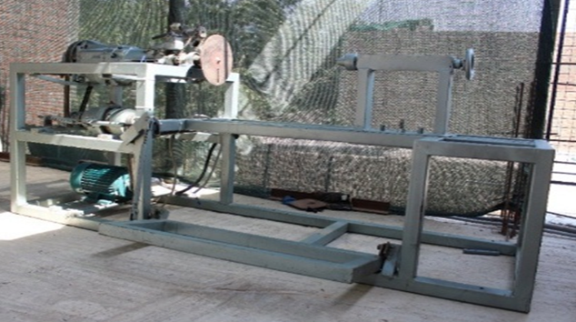

Maquina bobinadora para motores y transformadores
Una máquina bobina se encarga de enrollar un material como alambre de metal, hilo, papel, etc. sobre un núcleo o carrete. En el mundo, existen diferentes tipos de máquinas de bobinado, desde las máquinas simples hasta las más complejas que tienen un control número y computadora.
La mayoría de las máquinas de bobinado son manuales con una combinación con automático pero sin llegar a ser computarizados en su totalidad, en la cual los controles regulan la tensión del material, la cantidad que se enrolla en la base, y el patrón en que el material se enrolla sobre la base.
La maquina bobinadora sirbe para fabricar bobinas de transformadores monofasicas y trifasicas de diferentes tamaños a requerimiento del cliente. Tambien se fabrica bobinados para motores de induccion.
Las máquinas de bobinado eléctricas se utilizan para bobinar bobinas para motores, transformadores, inductores y estranguladores. El equipo de bobinado se utiliza en una variedad de aplicaciones de bobinado de alambre, soldadura de alambre y unión de alambre. Algunas máquinas de bobinado se utilizan en aplicaciones de bobinado y montaje de bobinas automatizadas, bobinado de alambre magnético, bobinado de transformador o bobinado de motor. Otros equipos se utilizan en bobinado de solenoide.
Tipos de bobinadoras:
Estas máquinas de bobinado se utilizan para bobinar bobinas de motores monofásicos y trifásicos. Están diseñadas para usarse con ejes de bobinado de motor concéntricos o de igual tamaño. También se encuentran disponibles bobinadoras de motor de servicio mediano y bobinadoras de motor de servicio pesado. Las máquinas de bobinado de bobinas de transformador se utilizan para producir bobinas para transformadores de potencia que convierten los voltajes de nivel de potencia de un nivel o configuración de fase a otro. También se utilizan para enrollar bobinas para transformadores toroidales, dispositivos que consisten en alambre de cobre enrollado alrededor de un núcleo cilíndrico. Además, las máquinas de bobinado se utilizan con inductores y estranguladores, componentes pasivos que resisten los cambios en la corriente y almacenan energía en forma de campo magnético.
Especificaciones:
Las máquinas bobinadoras eléctricas están disponibles en configuraciones de husillo único. Las bobinadoras de bobina de un solo eje tienen especificaciones como rango de alambre, rango de paso, ancho de bobinado, resolución de giro, precisión de parada del eje, rango de velocidad, torque, distancia entre centros, diámetro máximo de bobinado, fuente de alimentación, dimensiones y peso.